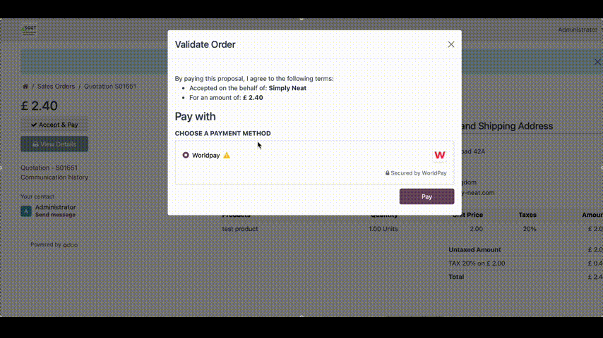

Worldpay online payments integration by SNS
Start accepting online payments effortlessly with Worldpay
As a Worldpay partner, we offer:
Premium rates for new customers
Attractive commission opportunities for Odoo partners
Contact us for more information on our email: support@neatapps.io
Odoo App Installation

Installation
- Upon clicking the 'Download' button on the app, you will receive the link to download the zip file of the module.
- Extract the file on your system after the download finishes. You will be able to see a folder named- 'payment_neatworldpayvt'.
- Copy and paste this folder inside your Odoo Add-Ons path.
- Now, open the Odoo App and click on the Settings menu.Scroll to the very bottom of settings. Here, click on Activate the "Developer Mode".
- Then, open the Apps menu and click on the top bar 'Update Apps List'.
- In the search bar, remove all the filters and search 'Worldpay'.
- You will be able to see the module 'Payment Provider: Worldpay' in the search result. Click on 'Install' to install it.
Setup
- In Odoo goto Settings -> Sale -> Payment Providers and select Worldpay
- There are 3 states available (Disabled, Enabled, Test Mode) select Enabled if you are looking to go live and Test Mode if you first want to do a test run payment and change it later to Enabled for live.
- You will need an Activation Code for this module and to get it you can click the "Get Free Activation Code" link and fill out the form or contact us at: support@neatapps.io and we will provide the code shortly.
- Next we will need to enter the Entity, Username and Password so you will need a Worldpay account. If you dont have one get in touch with us and we can help you with premium terms. If you are an Odoo partner we offer commission based compensation for new customers.
- Once registered go to https://dashboard.worldpay.com login and go to the Developer Tools section, copy your entity and paste it inside Odoo.
- Click on API Credentials to generate a Username and Password. in Try Mode you can do test payments if you have selected Test Mode in Odoo otherwise select Live Mode and click Generate Credentials.
- Copy the Username and Password into Odoo.
- iFrame checked allows you to keep the user on your Odoo website while making the payment. If you uncheck it the user will be redirected to the worldpay website to complete the payment.
- The Odoo Server URL is your current Odoo website domain which you see at the top of the browser. It should be automatically filled but if not just copy it from your browser. Example : https://www.example.com
- Select a Fallback Failure User. This user should be someone responsible to whom we are going to generate an activity to for a Sale Order payment issue if there is no responsible user for the given Sale Order.
- Save your changes
- Finally we need to set the webhook. We are again going to copy your Odoo domain (example: https://www.example.com) and add this "/neatworldpay/wh" to the back of it and it should end up looking like: https://www.example.com/neatworldpay/wh
- Copy this URL and we again need to go to https://dashboard.worldpay.com , login and open Developer Tools
- You should see the Webhooks section adn you will be given the option to add the Webhook. Paste the constructed URL into the URL field and save.
- You are now ready to take your first payments! If you have selected Testing mode with Try Mode credentials you can use the test cards form here: https://developer.worldpay.com/products/access/hosted-payment-pages/testing
Support
Email: support@neatapps.io